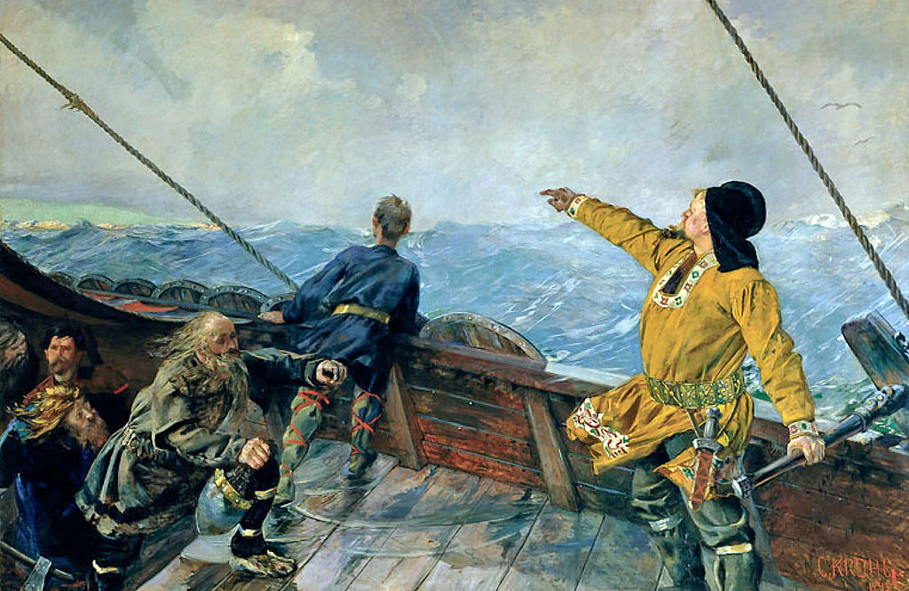

Eu moro em um condomínio pequeno, na cidade de Resende,
interior do Rio de Janeiro, com 40 casas no total. No
condomínio temos uma portaria e nela, porteiros. Um
desses porteiros se chama Adilson, uma pessoa muito
humilde e carismática, que também trabalha como uma
especie de faz tudo no condomínio (como limpar as piscinas
das casas, cortar a grama, entre outros). É casado com
Rose, trabalhadora doméstica.
Vinícius Junior, mais conhecido como Vini Jr, é um jogador
de futebol brasileiro, que também possui a nacionalidade
espanhola, já que joga no time espanhol, Real Madrid.
Vini é destro, no Real Madrid joga com a camisa número 20,
e atua como ponta-esquerda. É considerado por muitos experts
como "uma versão moderna e mais forte de Neymar".
Todos conhecemos, ainda que seja o mais mínimo possível,
quem foram os vikings, os exploradores, guerreiros e
comerciantes que invadiram, exploraram e colonizaram
grande parte da Europa e, também das ilhas do Atlântico
Norte, isso durante os séculos VII e XI. Um Viking muito
importante para a história viquingue, foi Leif Eriksson,
nacido na Noruega, foi o primeiro europeu a chegar à América
do Norte, na região que hoje se conhece como Canadá, por
volta do ano 1000.

Para quem já assistiu ao filme Náufrago, sabe que o filme
se trata do ator Chuck Noland (Tom Hanks), em seu papel como
resolvedor de problemas de produtividade nos depósitos da
FedEx, e é por isso que ele sempre está viajando. Em uma
ocasião, o avião em que se encontrava caiu em uma ilha deserta.
Durante o tempo que esteve preso nessa ilha, Chuck machucou a
mão e, com a mão suja de sangue, pegou uma bola de vôlei da
marca Wilson, o que resultou em uma espécie de cara na bola.
Chuck então, para não se sentir mais tão sozinho na ilha,
deu o nome de Sr. Wilson à bola e foi seu único amigo por
muito tempo, até se perder no oceano, durante a fuga de Chuck
da ilha.
Juliana Paes, nacida em Rio Bonito, interior do Rio de Janeiro,
é uma atriz brasileira. A atriz de 43 anos, é conhecida por
seus trabalhos em novelas da Globo, como O Clone (2001),
Pé na Jaca (2006), Caminho das Índias (2009),
Gabriela (2012) e Pantanal (2022).
Visite o Google para conhecer mais sobre os nomes mencionados na lista anterior. Google